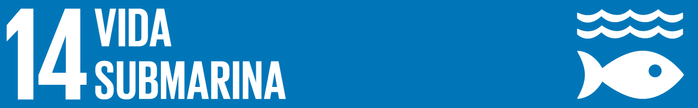

Metas del Objetivo de Desarrollo Sostenible 14
14.1 Reducir la contaminación marina
Para 2025, prevenir y reducir significativamente la contaminación marina de todo tipo.
14.2 Proteger los ecosistemas marinos
Para 2020, gestionar y proteger sosteniblemente los ecosistemas marinos y costeros.
14.3 Minimizar la acidificación
Minimizar y abordar los efectos de la acidificación de los océanos.
14.4 Regular la pesca
Para 2020, regular eficazmente la explotación pesquera y poner fin a la pesca excesiva.
14.5 Conservar zonas costeras
Para 2020, conservar al menos el 10% de las zonas costeras y marinas.
14.6 Prohibir subsidios perjudiciales
Para 2020, prohibir ciertas formas de subsidios a la pesca que contribuyen a la sobrecapacidad.
14.7 Aumentar beneficios económicos
Para 2030, aumentar los beneficios económicos para los pequeños Estados insulares.
14.a Investigación científica
Aumentar los conocimientos científicos y la capacidad de investigación marina.
14.b Acceso a recursos marinos
Facilitar el acceso de los pescadores artesanales a los recursos marinos.
14.c Implementación del derecho internacional
Mejorar la conservación y el uso sostenible de los océanos mediante el derecho internacional.